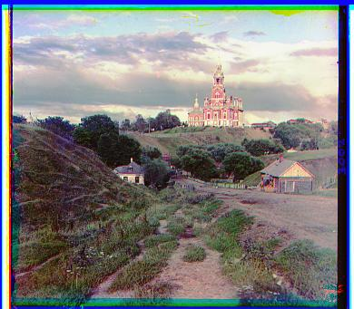
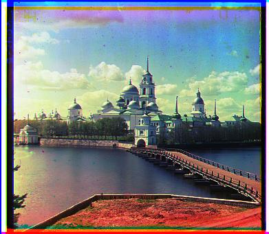
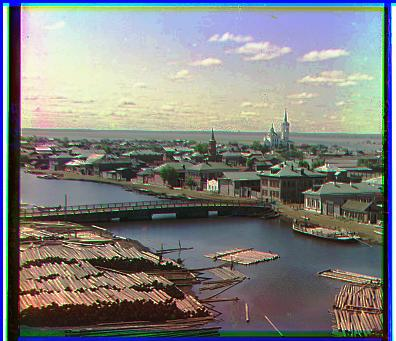
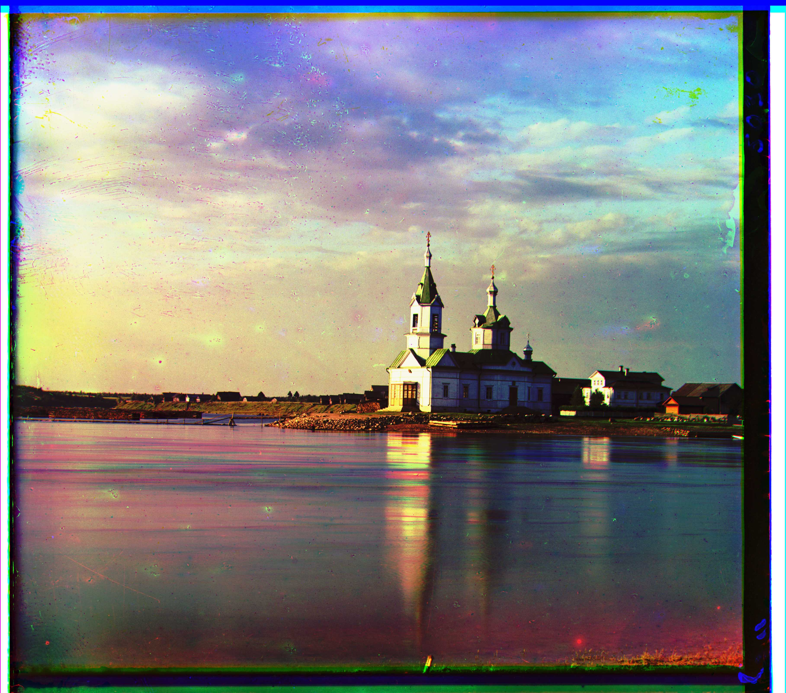
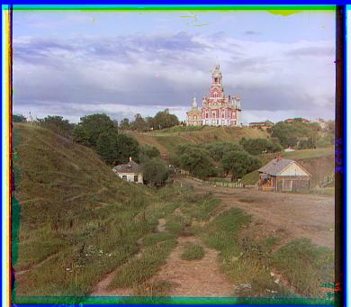
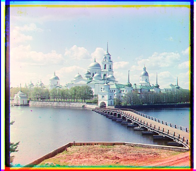
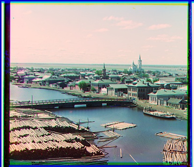
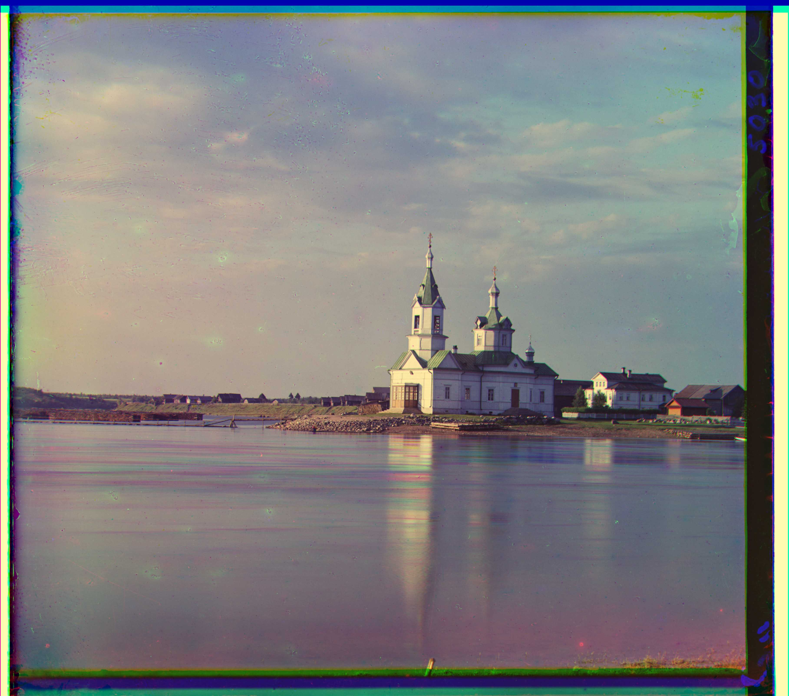
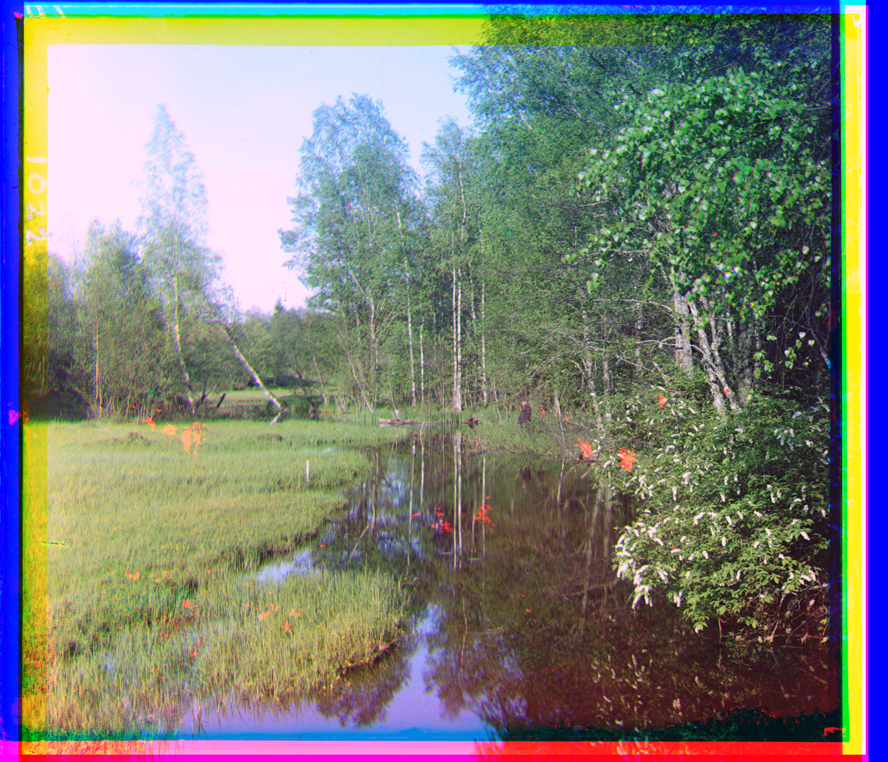

Introduction
For each subject in the Prokudin-Gorskii collection, three exposures were taken through a red, a green, and a blue filter. However, across these three channels, the images are not perfectly aligned, so a more intelligent algorithm is needed to produce the photographs in color. This project focuses on using single-scale and multi-scale algorithms to align both small and very large images from the collection. Additionally, methods of automatically contrasting and white-balancing the resulting color images were also explored.
Single-scale Alignment
Approach
For the smaller images, it was efficient enough to work only with the original
resolution. The blue
channel was held constant while the red and green channels were aligned to it.
The algorithm is a
simple exhaustive search across all possible combinations of image shifts
(dx and
dy) both within the range [-delta, delta] (I used
delta=15).
For each of these combinations,
the shifted image was compared to the target using a pixel-wise
sum-absolute-error (SAE) function,
in
which the intensities of corresponding pixels are subtracted, and the absolute
values of these
differences are summed across all pixels. However, before calculating this
error, the border of the
images is cropped by max(int(max(h, w) * 0.045), delta) so that
only the internal
pixels are represented in the error. The int(max(h, w) * 0.045)
term is necessary for
the larger images because their borders are proportionally larger in terms of
number of pixels.
Lastly, the combination of dx and dy
that achieved the lowest error is returned as the final alignment offset.
I also tried using a sum-squared-error (SSE) function as my metric, which did not work nearly as well as SAE. SSE punishes large differences in pixel values much more heavily than SAE does, which could be a disadvantage. Many images have artifacts that are only present in some, but not all, of the color channels, which means the differences in pixel intensities caused by these artifacts are large. With SSE, the error caused by these artifacts are amplified, potentially drowning out more meaningful error from other parts of the image. This causes the algorithm to instead focus on finding a good match for the artifacts, potentially rejecting perfect matches of the actual contents.
Results


Custom Images
Offsets
| File name | Red dx | Red dy | Green dx | Green dy |
|---|
Multi-scale Alignment
Approach
For the larger .tif images, an image pyramid was used to speed up
the alignment
process. The levels of the pyramid are processed from coarsest (level
N-1) to finest
(level 0). At level i, both the source
image (red or green
channel) and target image (blue channel) are downscaled to
1 / (2 ** i) of
their original dimensions. Then, the single-scale alignment algorithm is run on
these downscaled
images to obtain two offsets, dx and dy. However,
because these offsets
are relative to the dimensions of the downscaled image, they need to be
multiplied by
2 ** i to convert back to the dimensions of the original image.
These converted offsets
are then added to the running totals total_dx and
total_dy, and the
original source image is shifted by these offsets in preparation
for the next
iteration.
Optimizations
Because calculations at each combination of dx and dy
are independent of
each other, the alignment algorithm could be multi-threaded. With N
threads, thread
i is responsible for computing error values for dy in
range(-delta + i, delta + 1, N) and all dx's. This
ensures an even
distribution of work across all N threads.
After all threads finish, the combination of dx and dy
with the lowest
error is returned.
In the end, this optimization achieved a 3.3x speedup, decreasing
average processing
time from about 75 seconds to 23 seconds.
Results
Misalignments
The multi-scale alignment algorithm worked well for all images except
lady.tif, in which the red channel was slightly misaligned. This
could be due to the artifacts in the red channel, which cover a much larger
portion of the image compared to artifacts in the other channels. Slightly
increasing the amount of cropping (shrinking the internal pixels region) before
calculating the error metric helped resolve this issue:

Custom Images
Offsets
| File name | Red dx | Red dy | Green dx | Green dy |
|---|
Bells and Whistles
Contrast
Automatic contrasting was implemented using the cumulative histogram method
taught in class. For each channel, an array freq of size
256 was used to count the frequency of each pixel intensity value.
A prefix sum is computed over the values in this array such that
prefix[i] = sum(freq[:i+1]). The last element of the prefix sum is
the total number of pixels in the image, which is stored as total.
This way, prefix[i] / total gives the proportion of pixels that
have intensity <= i. For each pixel in the channel, its intensity
is reassigned to be equal to prefix[i] / total * 255, which
stretches the dynamic range of the channel to fill [0, 255].
| Before | After |
|---|---|
|  | |
|
 |
|
 |
|  |
White Balance
White balancing was achieved through shifting the average pixel color to a desired gray_point. The average color vector avg_color was computed using np.mean() across the first (y) and second (x) dimensions. Then, all pixels in the image were divided by avg_color and multiplied by gray_point through shape-broadcasting.
| Gray point | Before | After |
|---|---|---|
| (128, 128, 128) |  | |
| (180, 180, 180) | |
 |
| (150, 150, 150) | |
 |
| (128, 128, 128) |  | |
| (128, 128, 128) |  |